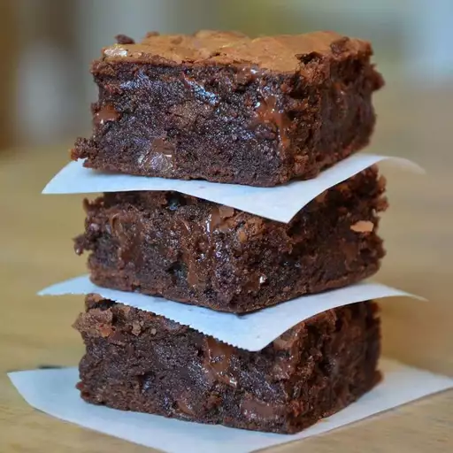

Brownies

Description:
This easy brownie recipe takes about 30 minutes to make from start to finish for a chocolaty treat!
Ingredients:
- Sugar: These easy brownies start with two cups of white sugar.
- Flour: All-purpose flour creates structure in the batter.
- Butter: Two sticks of melted butter give the brownies moisture and richness.
- Eggs: Eggs lend even more moisture. Plus, they help bind the batter together.
- Cocoa powder: Of course, you'll need cocoa powder for chocolate brownies!
- Vanilla: Vanilla extract enhances the overall flavor of the brownies.
- Baking powder: Baking powder acts as a leavener, which means it helps the
brownies rise.
- Salt: A pinch of salt enhances the flavors of the other ingredients.
- Walnuts: Nuts are optional, of course, but they add a welcome crunch.
How to Make Brownies:
- Preheat the oven to 350 degrees F (175 degrees C). Grease a 9x13-inch pan.
- Mix sugar, flour, melted butter, eggs, cocoa powder, vanilla, baking powder, and
salt in a large bowl until combined. Spread the batter into the prepared pan.
Decorate with walnut halves.
- Bake in the preheated oven until top is dry and edges have started to pull away
from the sides of the pan, about 20 to 30 minutes; cool before slicing into
squares.